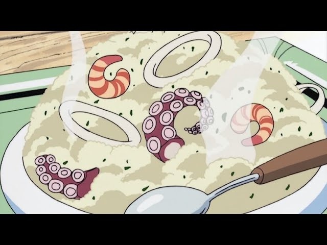
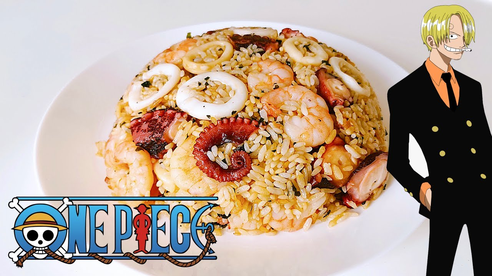

Fried Rice


Description
The favorite food of the future pirate king. With one bite, it'll give you enough strength to conquer the seas,
take on the world government, and defeat the four yonkos!
Ingredients
- 360g rice
- 2 eggs
- 50g corned beef
- 1/4 onion
- 4 brown mushroom
- 1 tbsp vegetable oil
- 1/2 tsp salt
- black pepper based on your preference
- 1/2 tsp soy sauce
- green onion as prefered
Steps
- Finely chop the onion
- Take off the mushroom caps and thinly slice
- Cut a small amount of green onion
- Add vegetable oil in the frying pan, put in half the onion and all of the mushrooms and stir fry
- Add the corned beef and stir fry
- Put the ingredients that was stir fried aside
- Put some vegetable oil in the pan and add beaten eggs
- Before the egg cooks, add the rice and quickly stir fry
- Mix all the stir fried stuff together and add salt and pepper
- Add the rest of the onion, add soy sauce, and mix a little
- After putting on a plate, sprinkle the green onion on top